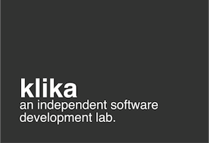
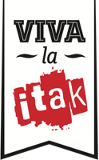

Rails Girls se vračajo v Ljubljano! Na tokratno brezplačno delavnico, ki jo soorganizira Fakulteta za računalništvo in informatiko Univerze v Ljubljani, vabimo predvsem dijakinje, ki se odločate o svoji prihodnosti in bi se rade poskusile v izdelavi svoje spletne aplikacije.
Kaj so spletne aplikacije? Kaj so Railsi in kako so povezani s puncami? Je programiranje sploh zate? Brez skrbi, delavnica je namenjena tudi popolnim začetnicam, ki še nimate nobenih izkušenj s takšnim ali drugačnim programiranjem! Vse, kar potrebuješ za sodelovanje, je svoj prenosnik in željo po spoznavanju spletnega programiranja v družbi super punc in izkušenih mentorjev.
Deli stran s prijateljicami:Naučila se boš osnov spletnega programiranja s pomočjo prijaznih mentorjev.
Potrebuješ le svoj prenosnik, radovednost in ščepec domišljije!
Kaj pričakovati? Obišči našo Facebook stran za utrinke iz decembrske delavnice.
| 9:00 - 10:00 |
Installation partySpoznaj ostale udeleženke, mentorje in organizatorje. Skupaj bomo preverili, da je na prenosniku nameščeno vse, kar potrebuješ za spoznavanje Ruby on Rails. |
|---|---|
| 10:00 - 10:30 |
Skupno ogrevanjeKratka predstavitev programa in sponzorjev ter več o tem, zakaj smo lahko tudi punce na področju programiranja in tehnologije uspešne. |
| 10:30 - 10:45 |
Uvod v splet in programiranjeKako deluje splet in kaj sploh je programiranje? |
| 11:00 - 11:30 |
Bentobox vajaSpoznavanje osnovnih izrazov s področja spletnega programiranja z zabavno vajo. |
| 11:30 - 13:30 |
DELAVNICAIzdelava lastne spletne aplikacije v majhnih skupinah (3 udeleženke) pod vodstvom prijaznega mentorja ali mentorice. |
| 13:30 - 14:30 | Kosilo |
| 14:30 - 14:45 |
#FridayHugZabavna skupinska vaja za prebuditev po kosilu. |
| 15:00 - 18:00 |
DELAVNICANadaljevanje izdelave lastne spletne aplikacije v majhnih skupinah. |
| 18:00 - 18:15 |
ZaključekSkupen zaključek, po katerem lahko še poklepetaš s puncami in mentorji o fantastični izkušnji Rails Girls. |
Koliko stane delavnica? Nič, udeležba je brezplačna! Vse kar potrebuješ, je navdušenje in želja po ustvarjanju!
Komu je namenjena? Tokrat ste posebej vabljene dijakinje katerekoli srednje šole z osnovnim znanjem uporabe računalnika. Programerske izkušnje niso potrebne, vsaka udeleženka potrebuje svoj prenosnik. Program bo potekal v slovenščini.
Se lahko prijavim, tudi če nisem dijakinja? Lahko, vendar bodo dijakinje tokrat imela prednost pri izbiri.
Ali se lahko prijavijo tudi moški? Da, vendar moraš biti v spremstvu punce, ki jo zanima programiranje. V primeru večjega števila prijav bodo imele prednost predvsem punce.
Znam programirat - kako lahko pomagam? Pridruži se nam kot mentor/ica! Dobrodošli tudi fantje, posebne predpriprave niso potrebne. Za dodatne informacije in prijavo nam piši!
Prijave: do vključno 22. februarja
Izbor udeleženk: najkasneje do 25. februarja
Število izbranih udeleženk: 45
Datum delavnice: 2. marec 2013
Lokacija delavnice: Fakulteta za računalništvo in informatiko, Tržaška cesta 25, Ljubljana
Rails Girls Ljubljana bodo omogočili naši super partnerji:
Glavni sponzor:

Silicon Gardens - Silicijevi Vrtički so neformalno združenje mladih podjetnikov s področja visokih tehnologij. Po vzoru dvajset let stare kalifornijske silicijeve doline, v začetku tisočletja poimenovane new yorške Silicon Alley (silicijeva ulica), v zadnjih nekaj letih nastalega Londonskega Silicon Roundabout (silicijevo krožišče), Berlinske Silicon Alee, in v pričakovanju Kenijske Silicon Savannah, ker radi negujemo vsak svoj vrtiček, se z njim pohvalimo pred sosedom, in na njem vzgojimo najboljše produkte na svetu.
Glavni sponzor:

Klika je ponudnik naprednih lokacijskih storitev, razvoja programske opreme in IT svetovanja. Za različne naročnike so ustvarili že vrsto uspešnih mobilnih in spletnih aplikacij, ki uporabljajo napredne tehnologije.
Sponzor:
Zabec.net je zaradi strokovne in prijazne podpore strankam eno izmed večjih in najhitreje rastočih podjetij na področju spletnega gostovanja v Sloveniji. Poleg spletnega gostovanja ekipa Zabec.net nudi možnost registracije domen ter razvija spletne aplikacije za večja in manjša podjetja. Udeleženkam delavnice bodo ponudili ugodnejši nakup domen in gostovanja.
Predavanja bo snemala:
Viidea ponuja portale za video predavanja, ki so združena z interaktivnimi prosojnicami.
Sponzor:

Nam želite pomagati? Veseli bomo dodatnih sponzorjev za dogodek! Pišite nam!
 Alja Isaković
@iAlja
Alja Isaković
@iAlja
 Aleš Špetič
@alesspetic
Aleš Špetič
@alesspetic